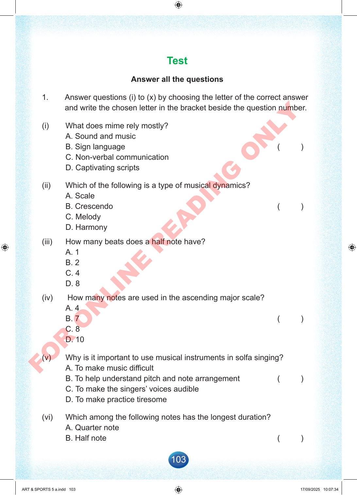

103
Test
Answer
all
the
questions
1.
Answer
questions
(i)
to
(x)
by
choosing
the
letter
of
the
correct
answer
and
write
the
chosen
letter
in
the
bracket
beside
the
question
number.
(i)
What
does
mime
rely
mostly?
A.
Sound
and
music
B.
Sign
language
(
)
C.
Non-verbal
communication
D.
Captivating
scripts
(ii)
Which
of
the
following
is
a
type
of
musical
dynamics?
A.
Scale
B.
Crescendo
(
)
C.
Melody
D.
Harmony
(iii)
How
many
beats
does
a
half
note
have?
A.
1
B.
2
C.
4
D.
8
(iv)
How
many
notes
are
used
in
the
ascending
major
scale?
A.
4
B.
7
(
)
C.
8
D.
10
(v)
Why
is
it
important
to
use
musical
instruments
in
solfa
singing?
A.
To
make
music
difficult
B.
To
help
understand
pitch
and
note
arrangement
(
)
C.
To
make
the
singers’
voices
audible
D.
To
make
practice
tiresome
(vi)
Which
among
the
following
notes
has
the
longest
duration?
A.
Quarter
note
B.
Half
note
(
)
ART
&
SPORTS
5
a.indd
103
ART
&
SPORTS
5
a.indd
103
17/09/2025
10:07:34
17/09/2025
10:07:34
F
O
R
O
N
L
I
N
E
R
E
A
D
I
N
G
O
N
L
Y